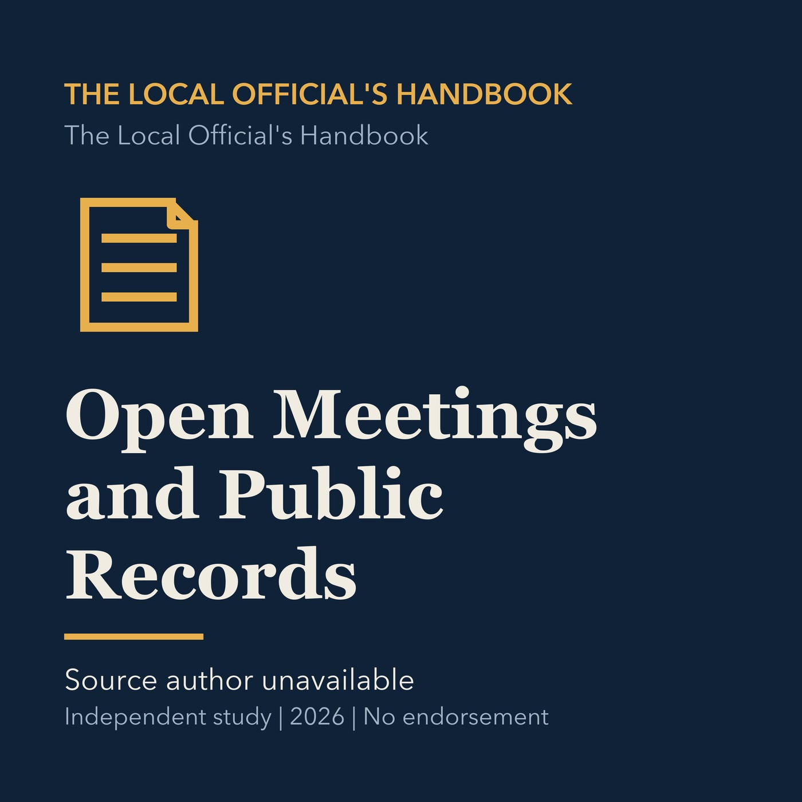

EPISODE 02
Open Meetings and Public Records
Explains the state open-meeting and public-records laws that shape local government transparency.

- Stable GUID
c00ae451-b9e6-5d03-a48d-8808e3a07186- Release
- local-officials-handbook-v2026.2
- SHA-256
3f59e8b4461050de53f57166c0fe57a1b9587fb57439615878dd993144c0b332